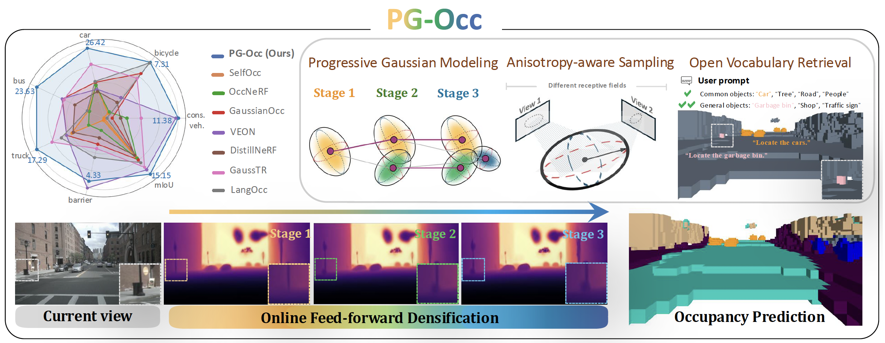
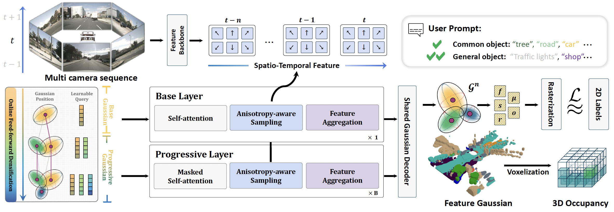
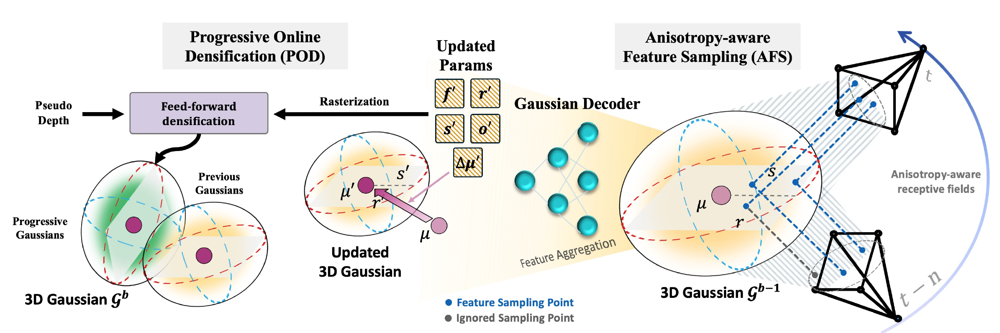

Progressive Gaussian Transformer with Anisotropy-aware Sampling for Open Vocabulary Occupancy Prediction
1. Paper at a Glance
- Task: Open-vocabulary 3D occupancy prediction
- Core idea: Progressive Gaussian refinement for sparse yet fine-grained scene modeling
- Keywords: Gaussian representation, densification, anisotropy-aware sampling, open-vocabulary occupancy
2. Overview

Main intuition
- Start from coarse base Gaussians
- Progressively densify under-modeled regions
- Use anisotropy-aware sampling for better feature aggregation
- Improve fine-grained occupancy prediction while keeping efficiency
3. Method Breakdown

3.1 Base Gaussian Representation
PG-Occ represents the 3D scene as a set of sparse feature Gaussian blobs:
| Symbol | Meaning |
|---|---|
| 3D center of the Gaussian blob | |
| Axis-wise scale of the Gaussian blob | |
| Rotation quaternion defining Gaussian orientation | |
| Opacity / density term | |
| 512-d text-aligned semantic feature | |
| Total number of Gaussian blobs |
In the default PG-Occ setting, the model starts from 4,000 base Gaussian queries and uses two progressive densification layers, each adding 1,000 new queries.

3.2 Progressive Feed-forward Densification
3.3 Anisotropy-aware Sampling
3.4 Open-vocabulary Prediction Head
4. Position in the Literature
Open-vocabulary 3D Occupancy: Evolution
| Stage | Representative Works | Key Idea |
|---|---|---|
| 1. Open-vocabulary alignment |
OVO (2023) POP-3D (NeurIPS 2023) VEON (ECCV 2024) |
Distill knowledge from 2D foundation models and CLIP-style supervision into 3D occupancy. |
| 2. Vision-only modeling | LangOcc (2024) | Move toward purely vision-based open-vocabulary occupancy via NeRF-style scene representation. |
| 3. Efficient sparse representation | GaussTR (CVPR 2025) | Replace dense text-vision 3D features with sparse Gaussian blobs for better efficiency. |
| 4. Progressive refinement | PG-Occ (ICLR 2026) | Introduce progressive online densification and anisotropy-aware sampling for finer scene modeling. |
Takeaway. The evolution can be viewed as:
language-aligned occupancy → vision-only modeling → sparse Gaussian efficiency → progressive Gaussian refinement
language-aligned occupancy → vision-only modeling → sparse Gaussian efficiency → progressive Gaussian refinement